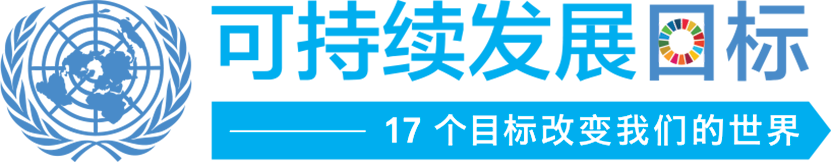
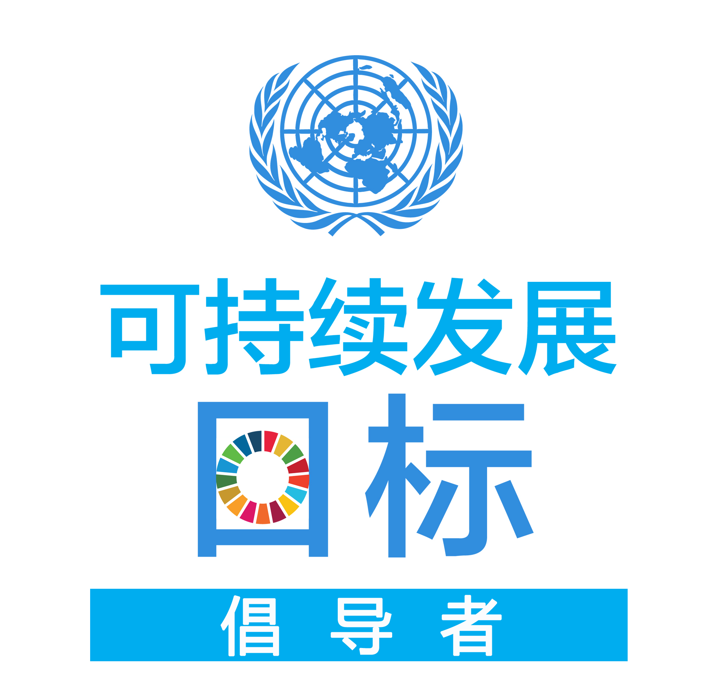

17个目标: 变革我们的世界
2016年各个国家及其人民共同来改善世界各地人民的生活。为构建更加美好世界的努力，采用新的可持续发展议程和关于气候变化的一个新的全球协定。

可持续发展倡导者
关于
可持续发展议程
《巴黎气候变化协定》签署仪式
为我们期望的未来筹资
秘书长
采取行动
关键日期
搜索关键日期
关键日期
新闻与媒体
新闻稿
联络方式
宣传材料
收看及收听
视频
照片
目标
贫穷
饥饿和粮食安全
健康
教育
性别平等和妇女权能
水和环境卫生
能源
经济增长
基础设施和工业化
不平等
城市
可持续的消费和生产模式
气候变化
海洋
森林，荒漠化和生物多样性
和平与正义
伙伴关系
可持续发展目标
在全世界消除一切形式的贫困
消除饥饿，实现粮食安全，改善营养状况和促进可持续农业
确保健康的生活方式，促进各年龄段人群的福祉
确保包容和公平的优质教育，让全民终身享有学习机会
实现性别平等，增强所有妇女和女童的权能
为所有人提供水和环境卫生并对其进行可持续管理
确保人人获得负担得起的、可靠和可持续的现代能源
促进持久、包容和可持续经济增长，促进充分的生产性就业和人人获得体面工作
建造具备抵御灾害能力的基础设施，促进具有包容性的可持续工业化，推动创新
减少国家内部和国家之间的不平等
建设包容、安全、有抵御灾害能力和可持续的城市和人类住区
采用可持续的消费和生产模式
采取紧急行动应对气候变化及其影响
保护和可持续利用海洋和海洋资源以促进可持续发展
保护、恢复和促进可持续利用陆地生态系统，可持续管理森林，防治荒漠化，制止和扭转土地退化，遏制生物样性的丧失
保护和可持续利用海洋和海洋资源以促进可持续发展
创建和平、包容的社会以促进可持续发展，让所有人都能诉诸司法，在各级建立有效、负责和包容的机构